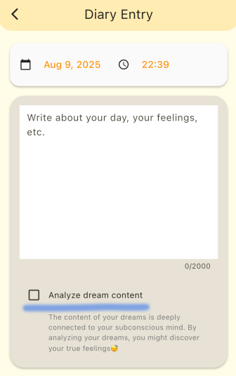

Willkommen! Ihre täglichen kleinen Gedanken werden zu den "Spuren Ihres Herzens". Beginnen Sie einfach mit 1-3 Zeilen.
1. Hauptfunktionen
Partner ändern Einstellungen
- Sie können Ihren Partner im Einstellungsbildschirm ändern. Passen Sie Ihren Begleiter an, der Sie unterstützt und Ihre täglichen Aufzeichnungen warmherzig beobachtet.

Startbildschirm
- Herzbaum: Wächst jedes Mal, wenn Sie einen Tagebucheintrag posten. Je mehr Sie fortfahren, desto reicher wird er und macht Ihre tägliche Ansammlung sichtbar.

- Beitragsverlauf: Überprüfen Sie Ihre Anzahl der Beiträge und aufeinanderfolgenden Tage auf einen Blick. Erfolg motiviert Sie zum Weitermachen.
Tagebucheintrag
- Normaler Modus: Zeichnen Sie tägliche Ereignisse und Gefühle frei auf.
- Traumtagebuch-Modus: Traumanalyse ist aktiviert, um Ihre Traumwelt zu analysieren und zu kommentieren. Schalten Sie den blauen Linienbereich EIN für Traumtagebuch-Modus, AUS für normalen Modus. 
- KI-Kommentare: Ihr Partner gibt sanfte Kommentare basierend auf Ihrem Inhalt. Macht Reflexion angenehm.
Tagebuchliste
- Filterung (Lesezeichen/mit Bildern/nur Traumtagebücher usw.) ermöglicht es Ihnen, die gewünschten Aufzeichnungen schnell einzugrenzen.
Dashboard
- Emotionsüberwachung: Überprüfen Sie tägliche positive/negative Trends
- Emotionskalender: Erfassen Sie tägliche Stimmungstrends intuitiv mit Farben
- Radardiagramm: Visualisieren Sie emotionale Balance
- Wortwolke: Zeigen Sie häufig verwendete Wörter auf einen Blick an
- Wöchentliche/Monatliche Berichte: Überprüfen Sie KI-zusammengefasste Trends (Werbung ansehen oder abonnieren)
- Wochentag-Emotionstrends: Entdecken Sie wöchentliche Rhythmen mit Durchschnittswerten nach Wochentag
- Monatliche Emotionstrends: Verstehen Sie Veränderungen im frühen, mittleren und späten Monat
- Emotionale Stabilität: Visualisieren Sie Herzschwankungen und überprüfen Sie die Stabilität
6. Kontaktinformationen
E-Mail: support@knotnest.jp
Die Angabe von Situationsdetails und Screenshots hilft uns, eine reibungslose Anleitung zu bieten.